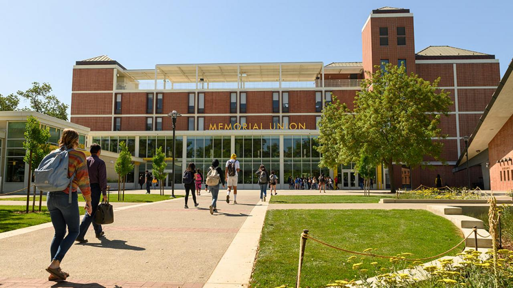
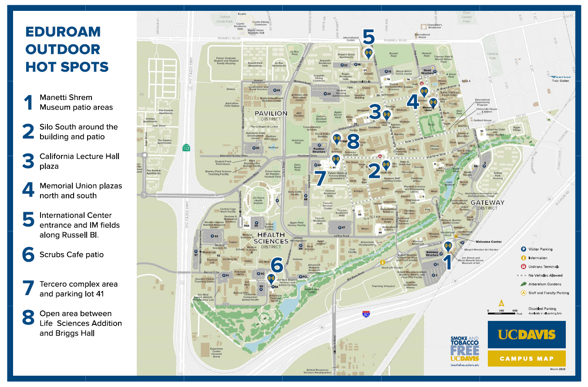
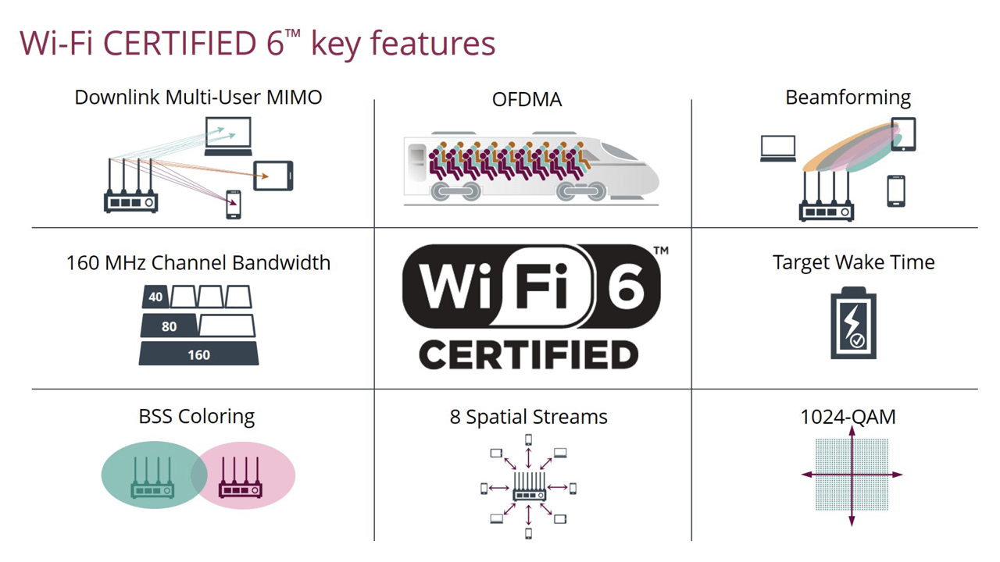

Improving Campus Wifi at UC Davis
A strong wifi connection has become essential to learning in today’s colleges for both professors and students. Many classes rely solely on wifi to take notes in class, study for exams, and work on assignments. When there is a problem with the internet connection, the professor would have to delay the lecture which deprives students of their education. It has been harder to maintain a reliable, fast, and secure wifi connection in recent years due to many devices being connected to the internet on the campus. There has been a growing number of college students who have multiple devices including smartphones, laptops, and tablets. For UC Davis to have a successful learning experience, it would require a strong wifi connection that can cover multiple areas of the campus.
UC Davis provides wireless internet access through Eduroam, a roaming service, which is used by many college campuses around the world. With this wifi service, there should always be a strong, fast, and reliable connection wherever a student is on campus. Due to student influence and device usage, keeping that promise has become more difficult. Currently, eight outdoor hotspots around campus provide support to over 30,000 students. The UC Davis library recently installed three new wireless access points in the main reading room, taking steps in the right direction. It is possible to connect approximately three hundred devices to these access points at the same time. Although the connection speed in the main reading room has increased, other areas on campus have remained spotty and require an upgrade.
There has been some improvement to the wifi recently, however, this is still a considerable amount of work needed to be done. To provide all of the students and their devices with a campus-wide connection, a concerted effort is required to be made. This proposal aims to improve the overall quality of UC Davis wifi by installing more hotspots and upgraded wireless access points throughout the campus. The lack of hotspots and access points has created a situation where students are impacted on their ability to access the internet to develop their education.
UC Davis faces challenges with wireless connectivity due to its size and high student density, with only 8 hotspots currently available on campus. Increasing the number of wireless access points in buildings around campus will improve the quality of connection for faculty and students. However, network congestion is an even bigger issue in highly dense areas, particularly in the Peter J. Shields Library where the current wireless access points can only support up to 300 devices. Upgrading to Wifi 6 and implementing Orthogonal Frequency-Division Multiple Access (OFDMA) technology can improve performance, capacity, and latency in high-density networks.
In summary, the University of California, Davis needs to expand its wireless access points and hotspots to improve connectivity for its faculty and students. The network congestion in highly dense areas especially in the library needs to be addressed by upgrading to Wifi 6 and OFDMA technology to increase the capacity and performance of the network.
Our team's goal is to send a proposal to the Information and Technology branch at UC Davis. We kindly ask you to fill out the survey linked below.